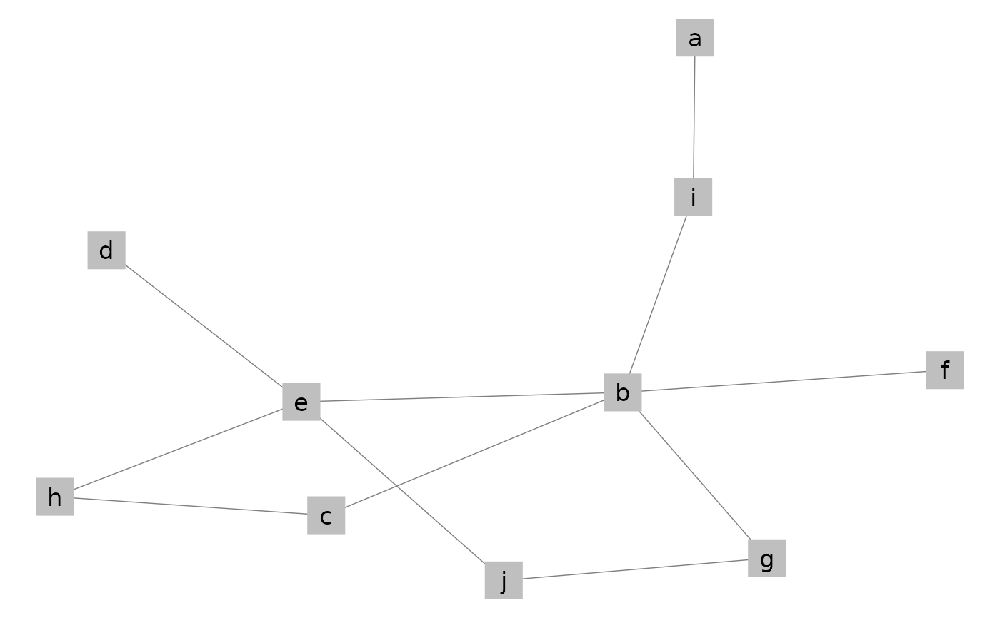
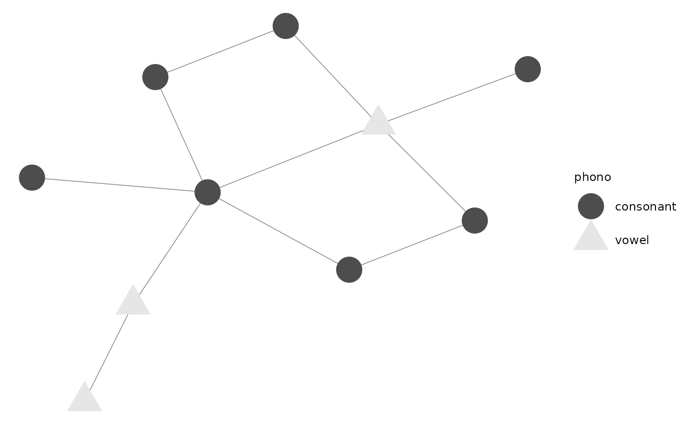
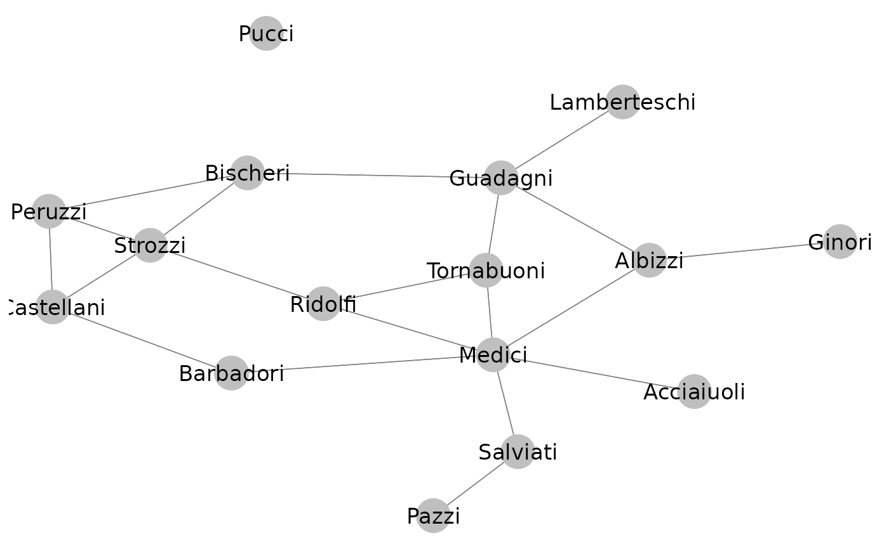
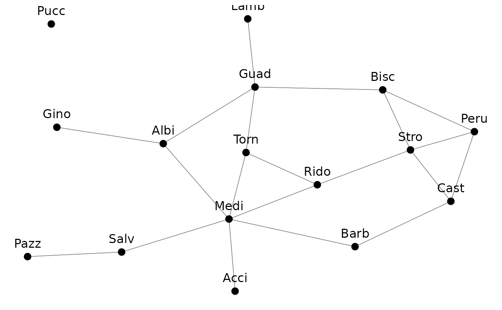
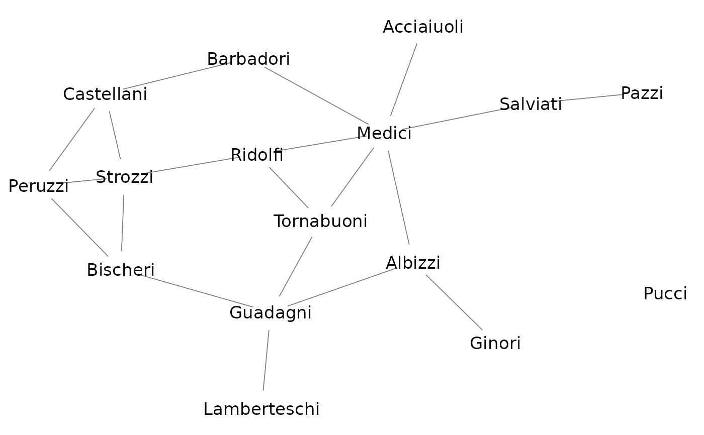

Function for plotting network objects using ggplot2, with additional control
over graphical parameters that are not supported by the ggnet
function. Please visit http://github.com/briatte/ggnet for the latest
version of ggnet2, and https://briatte.github.io/ggnet for a vignette
that contains many examples and explanations.
ggnet2( net, mode = "fruchtermanreingold", layout.par = NULL, layout.exp = 0, alpha = 1, color = "grey75", shape = 19, size = 9, max_size = 9, na.rm = NA, palette = NULL, alpha.palette = NULL, alpha.legend = NA, color.palette = palette, color.legend = NA, shape.palette = NULL, shape.legend = NA, size.palette = NULL, size.legend = NA, size.zero = FALSE, size.cut = FALSE, size.min = NA, size.max = NA, label = FALSE, label.alpha = 1, label.color = "black", label.size = max_size/2, label.trim = FALSE, node.alpha = alpha, node.color = color, node.label = label, node.shape = shape, node.size = size, edge.alpha = 1, edge.color = "grey50", edge.lty = "solid", edge.size = 0.25, edge.label = NULL, edge.label.alpha = 1, edge.label.color = label.color, edge.label.fill = "white", edge.label.size = max_size/2, arrow.size = 0, arrow.gap = 0, arrow.type = "closed", legend.size = 9, legend.position = "right", ... )
Arguments
| net | an object of class |
|---|---|
| mode | a placement method from those provided in the
|
| layout.par | options to be passed to the placement method, as listed in
gplot.layout.
Defaults to |
| layout.exp | a multiplier to expand the horizontal axis if node labels
get clipped: see expand_range for details.
Defaults to |
| alpha | the level of transparency of the edges and nodes, which might be
a single value, a vertex attribute, or a vector of values.
Also accepts |
| color | the color of the nodes, which might be a single value, a vertex
attribute, or a vector of values.
Also accepts |
| shape | the shape of the nodes, which might be a single value, a vertex
attribute, or a vector of values.
Also accepts |
| size | the size of the nodes, in points, which might be a single value,
a vertex attribute, or a vector of values. Also accepts |
| max_size | the maximum size of the node when |
| na.rm | whether to subset the network to nodes that are not
missing a given vertex attribute. If set to any vertex attribute of
|
| palette | the palette to color the nodes, when |
| alpha.palette | the palette to control the transparency levels of the
nodes set by |
| alpha.legend | the name to assign to the legend created by
|
| color.palette | see |
| color.legend | the name to assign to the legend created by
|
| shape.palette | the palette to control the shapes of the nodes set by
|
| shape.legend | the name to assign to the legend created by
|
| size.palette | the palette to control the sizes of the nodes set by
|
| size.legend | the name to assign to the legend created by
|
| size.zero | whether to accept zero-sized nodes based on the value(s) of
|
| size.cut | whether to cut the size of the nodes into a certain number of
quantiles. Accepts |
| size.min | whether to subset the network to nodes with a minimum size,
based on the values of |
| size.max | whether to subset the network to nodes with a maximum size,
based on the values of |
| label | whether to label the nodes. If set to |
| label.alpha | the level of transparency of the node labels, as a
numeric value, a vector of numeric values, or as a vertex attribute
containing numeric values.
Defaults to |
| label.color | the color of the node labels, as a color value, a vector
of color values, or as a vertex attribute containing color values.
Defaults to |
| label.size | the size of the node labels, in points, as a numeric value,
a vector of numeric values, or as a vertex attribute containing numeric
values.
Defaults to |
| label.trim | whether to apply some trimming to the node labels. Accepts
any function that can process a character vector, or a strictly positive
numeric value, in which case the labels are trimmed to a fixed-length
substring of that length: see |
| node.alpha | see |
| node.color | see |
| node.label | see |
| node.shape | see |
| node.size | see |
| edge.alpha | the level of transparency of the edges.
Defaults to the value of |
| edge.color | the color of the edges, as a color value, a vector of color
values, or as an edge attribute containing color values.
Defaults to |
| edge.lty | the linetype of the edges, as a linetype value, a vector of
linetype values, or as an edge attribute containing linetype values.
Defaults to |
| edge.size | the size of the edges, in points, as a numeric value, a
vector of numeric values, or as an edge attribute containing numeric values.
All edge sizes must be strictly positive.
Defaults to |
| edge.label | the labels to plot at the middle of the edges, as a single
value, a vector of values, or as an edge attribute.
Defaults to |
| edge.label.alpha | the level of transparency of the edge labels, as a
numeric value, a vector of numeric values, or as an edge attribute
containing numeric values.
Defaults to |
| edge.label.color | the color of the edge labels, as a color value, a
vector of color values, or as an edge attribute containing color values.
Defaults to |
| edge.label.fill | the background color of the edge labels.
Defaults to |
| edge.label.size | the size of the edge labels, in points, as a numeric
value, a vector of numeric values, or as an edge attribute containing numeric
values. All edge label sizes must be strictly positive.
Defaults to |
| arrow.size | the size of the arrows for directed network edges, in
points. See |
| arrow.gap | a setting aimed at improving the display of edge arrows by
plotting slightly shorter edges. Accepts any value between |
| arrow.type | the type of the arrows for directed network edges. See
|
| legend.size | the size of the legend symbols and text, in points.
Defaults to |
| legend.position | the location of the plot legend(s). Accepts all
|
| ... | other arguments passed to the |
Details
The degree centrality measures that can be produced through the
size argument will take the directedness of the network into account,
but will be unweighted. To compute weighted network measures, see the
tnet package by Tore Opsahl (help("tnet", package = "tnet")).
The nodes of bipartite networks can be mapped to their mode by passing the
"mode" argument to any of alpha, color, shape and
size, in which case the nodes of the primary mode will be mapped as
"actor", and the nodes of the secondary mode will be mapped as
"event".
See also
ggnet in this package,
gplot in the sna package, and
plot.network in the network
package
Author
Moritz Marbach and Francois Briatte, with help from Heike Hofmann, Pedro Jordano and Ming-Yu Liu
Examples
# Small function to display plots only if it's interactive p_ <- GGally::print_if_interactive library(network) # random adjacency matrix x <- 10 ndyads <- x * (x - 1) density <- x / ndyads m <- matrix(0, nrow = x, ncol = x) dimnames(m) <- list(letters[ 1:x ], letters[ 1:x ]) m[ row(m) != col(m) ] <- runif(ndyads) < density m#> a b c d e f g h i j #> a 0 0 1 0 0 0 0 0 1 0 #> b 0 0 0 0 0 0 0 0 0 0 #> c 0 0 0 0 0 0 0 0 0 0 #> d 0 0 0 0 0 0 1 0 1 0 #> e 0 1 0 0 0 0 0 0 0 0 #> f 0 0 0 0 0 0 0 0 0 0 #> g 0 0 0 1 0 0 0 0 0 0 #> h 0 0 0 0 0 1 0 0 0 0 #> i 0 0 0 0 0 0 0 0 0 0 #> j 0 0 0 0 0 0 0 0 0 0#> Network attributes: #> vertices = 10 #> directed = FALSE #> hyper = FALSE #> loops = FALSE #> multiple = FALSE #> bipartite = FALSE #> total edges= 6 #> missing edges= 0 #> non-missing edges= 6 #> #> Vertex attribute names: #> vertex.names #> #> No edge attributesp_(ggnet2(n, label = TRUE))p_(ggnet2(n, label = TRUE, shape = 15))p_(ggnet2(n, label = TRUE, shape = 15, color = "black", label.color = "white"))# add vertex attribute x = network.vertex.names(n) x = ifelse(x %in% c("a", "e", "i"), "vowel", "consonant") n %v% "phono" = x p_(ggnet2(n, color = "phono"))p_(ggnet2(n, shape = "phono", color = "phono"))#> Warning: Duplicated override.aes is ignored.if (require(RColorBrewer)) { # random groups n %v% "group" <- sample(LETTERS[1:3], 10, replace = TRUE) p_(ggnet2(n, color = "group", palette = "Set2")) }#># random weights n %e% "weight" <- sample(1:3, network.edgecount(n), replace = TRUE) p_(ggnet2(n, edge.size = "weight", edge.label = "weight"))# edge arrows on a directed network p_(ggnet2(network(m, directed = TRUE), arrow.gap = 0.05, arrow.size = 10))#> Acciaiuoli Albizzi Barbadori Bischeri Castellani Ginori Guadagni #> Acciaiuoli 0 0 0 0 0 0 0 #> Albizzi 0 0 0 0 0 1 1 #> Barbadori 0 0 0 0 1 0 0 #> Bischeri 0 0 0 0 0 0 1 #> Castellani 0 0 1 0 0 0 0 #> Ginori 0 1 0 0 0 0 0 #> Guadagni 0 1 0 1 0 0 0 #> Lamberteschi 0 0 0 0 0 0 1 #> Medici 1 1 1 0 0 0 0 #> Pazzi 0 0 0 0 0 0 0 #> Peruzzi 0 0 0 1 1 0 0 #> Pucci 0 0 0 0 0 0 0 #> Ridolfi 0 0 0 0 0 0 0 #> Salviati 0 0 0 0 0 0 0 #> Strozzi 0 0 0 1 1 0 0 #> Tornabuoni 0 0 0 0 0 0 1 #> Lamberteschi Medici Pazzi Peruzzi Pucci Ridolfi Salviati Strozzi #> Acciaiuoli 0 1 0 0 0 0 0 0 #> Albizzi 0 1 0 0 0 0 0 0 #> Barbadori 0 1 0 0 0 0 0 0 #> Bischeri 0 0 0 1 0 0 0 1 #> Castellani 0 0 0 1 0 0 0 1 #> Ginori 0 0 0 0 0 0 0 0 #> Guadagni 1 0 0 0 0 0 0 0 #> Lamberteschi 0 0 0 0 0 0 0 0 #> Medici 0 0 0 0 0 1 1 0 #> Pazzi 0 0 0 0 0 0 1 0 #> Peruzzi 0 0 0 0 0 0 0 1 #> Pucci 0 0 0 0 0 0 0 0 #> Ridolfi 0 1 0 0 0 0 0 1 #> Salviati 0 1 1 0 0 0 0 0 #> Strozzi 0 0 0 1 0 1 0 0 #> Tornabuoni 0 1 0 0 0 1 0 0 #> Tornabuoni #> Acciaiuoli 0 #> Albizzi 0 #> Barbadori 0 #> Bischeri 0 #> Castellani 0 #> Ginori 0 #> Guadagni 1 #> Lamberteschi 0 #> Medici 1 #> Pazzi 0 #> Peruzzi 0 #> Pucci 0 #> Ridolfi 1 #> Salviati 0 #> Strozzi 0 #> Tornabuoni 0p_(ggnet2(flo, label = TRUE))p_(ggnet2(flo, label = TRUE, label.trim = 4, vjust = -1, size = 3, color = 1))p_(ggnet2(flo, label = TRUE, size = 12, color = "white"))